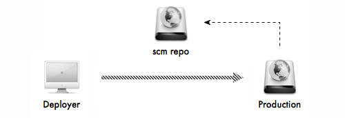
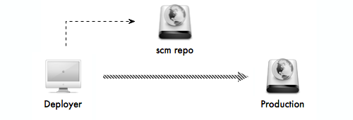

Capistrano is an open source tool for running scripts on multiple servers. It’s primary use is for easily deploying applications. While it was built specifically for deploying Rails apps, it’s pretty simple to customize it to deploy other types of applications. This project is a deployment recipes collection to work with both symfony and Symfony2 applications.
Setup initial deployment configuration for your project:
$> cd to/symfony1/or/Symfony2/project/path $> capifony .
This will create Capfile in your project root & deploy.rb config file in config for symfony and app/config for Symfony2 directory.
Fill up your config/deploy.rb (or app/config/deploy.rb) with your server connection data. But before, you must choose your deployment strategy.
First strategy is deployment to production server via intermediate git repository server. In this case, production server must have access to git repository (remote or not) and be able to make pulls from it. Deployment server must have ssh access to production server application path: 
# deploy.rb
set :application, "my-app.com"
set :deploy_to, "/www/#{application}"
set :domain, "ssh-deployment-domain"
set :scm, :git
set :repository, "ssh-gitrepo-domain:~/repos/#{application}.git"
role :web, domain
role :app, domain
role :db, domain, :primary => true
set :use_sudo, false
set :keep_releases, 3
In this case on every cap deploy, capifony will:
ssh-deployment-domain)/www/my-app.com/releases/...)ssh-gitrepo-domain)cache:warmup, cc, etc.)Second strategy is deployment to production server right from your deployment machine via copy. In this case, deployment server must have access to git repository (remote or not) and be able to make pulls from it, also it must have ssh access to production server application path: 
# deploy.rb
set :application, "my-app.com"
set :deploy_to, "/www/#{application}"
set :domain, "ssh-deployment-domain"
set :scm, :git
set :repository, "file:///Users/deployer/sites/my-app.com.git"
set :deploy_via, :copy
role :web, domain
role :app, domain
role :db, domain, :primary => true
set :use_sudo, false
set :keep_releases, 3
In this case on every cap deploy, capifony will:
ssh-deployment-domain)/www/my-app.com/releases/...)cache:warmup, cc, etc.)
Copy of whole project on every deploy is very expensive and slow task. But you can optimize things with capistrano_rsync_with_remote_cache gem:
$> gem install capistrano_rsync_with_remote_cache
And change your strategy in deploy.rb:
set :deploy_via, :rsync_with_remote_cache
In this case, rsync will create cache on your production server and will push only changes on deploys.
By default, capifony will ssh with your current system user, but you can change this behavior with set :user parameter:
set :user, "deployer"
If you’re using your own private keys for git you might want to tell Capistrano to use agent forwarding with this command. Agent forwarding can make key management much simpler as it uses your local keys instead of keys installed on the server:
ssh_options[:forward_agent] = true
You can tell cap the branch to checkout during deployment:
set :branch, "v0.2.0"
If you’re using git submodules you must tell cap to fetch them:
set :git_enable_submodules, 1
All symfony tasks (both symfony 1.4 and Symfony2) runs with default php bin on production server. You can change this with:
set :php_bin, "/path/to/php"
All symfony tasks (both symfony 1.4 and Symfony2) runs inside prod environment on production server. You can change this with:
set :symfony_env_prod, "new_prod_env"
By default, capifony will try to configure your config/databases.yml on every symfony 1.4 project deployment (if it's not) on production. You can turn this behavior off with:
set :use_orm, false
If you want to use shared symfony library instead of bundled one inside symfony 1.4 project, define path to it with:
set :symfony_lib, "/path/to/symfony"
If your app or web Symfony2 paths differs from default ones, you can specify them with:
set :app_path, "my_app" set :web_path, "my_web"
If you use AsseticBundle with Symfony2, then you may want to dump assets on every deploy. Turn next option off to enable assets autodumping on every deploy:
set :dump_assetic_assets, true
Now, you can start the deployment process! To get your server setup with the file structure that Capistrano expects, you can run:
$> cap deploy:setup
This command will create the following folder structure on your server:
`-- /var/www/demo.everzet.com
|-- current → /var/www/demo.everzet.com/releases/20100512131539
|-- releases
|-- 20100512131539
|-- 20100509150741
`-- 20100509145325
`-- shared
|-- log
|-- config
`-- databases.yml
`-- web
`-- uploads
The folders in the releases directory will be the actual deployed code, timestamped. Capistrano symlinks your log & web/uploads directories from your app to the directories in the shared folder so that it doesn’t get erased when you deploy a new version of your code.
To deploy your application, simply run:
$> cap deploy
Something went wrong???
$> cap deploy:rollback